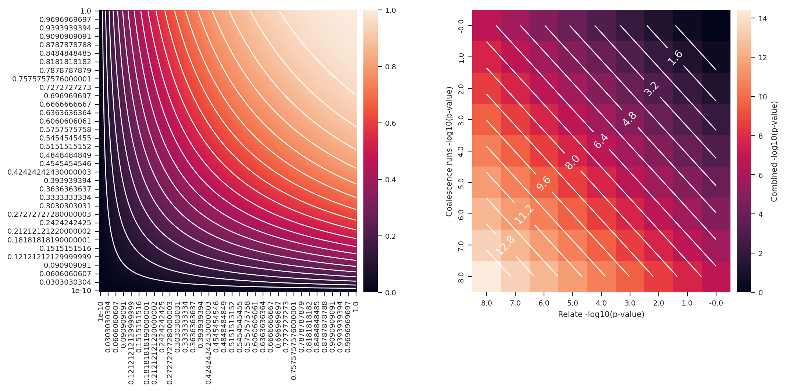

import os
import sys
from collections import defaultdict
from functools import partial
import itertools
import matplotlib.pyplot as plt
import seaborn as sns
import pandas as pd
from pandas.errors import SettingWithCopyWarning
import numpy as np
from matplotlib_inline.backend_inline import set_matplotlib_formats
set_matplotlib_formats('retina', 'png')
from tqdm.notebook import tqdm
from math import factorial, log, log10, log1p, floor, ceil
from scipy.stats import chi2
import multiprocess
sns.set()
sns.set_style("ticks")
import tskit
import msprime
import geneinfo as gi
gi.email('kaspermunch@birc.au.dk')
# scale down size of default plots
sns.set_context("paper")
import matplotlib as mpl
scale = 0.8
d = dict([(k, v*scale) for (k, v) in sns.plotting_context('paper').items()])
d['figure.figsize'] = [5.4, 3.5]
mpl.rcParams.update(d)
def modpath(p, parent=None, base=None, suffix=None):
par, name = os.path.split(p)
name_no_suffix, suf = os.path.splitext(name)
if type(suffix) is str:
suf = suffix
if parent is not None:
par = parent
if base is not None:
name_no_suffix = base
new_path = os.path.join(par, name_no_suffix + suf)
if type(suffix) is tuple:
assert len(suffix) == 2
new_path, nsubs = re.subn(r'{}$'.format(suffix[0]), suffix[1], new_path)
assert nsubs == 1, nsubs
return new_pathRuns test
from scipy.stats import chi2
def fisher_method(pvalues):
df = 2* len(pvalues)
return 1-chi2.cdf(-2*sum(map(log, pvalues)), df)
p = fisher_method([1e-4, 1e-3])
-np.log10(p)5.766544551240487def fisher_method(pvalues):
df = 2* len(pvalues)
return 1-chi2.cdf(-2*sum(map(log, pvalues)), df)
n = 100
x = np.linspace(1e-10, 1, n)
a = np.array(list(itertools.product(x, x)))
b = np.apply_along_axis(fisher_method, 1, a)
c = b.reshape(n, n)
data = pd.DataFrame(c)
data.index = x
data.columns = x
fig, (ax1, ax2) = plt.subplots(1, 2, figsize=(12, 5))
sns.heatmap(data=data, cbar_kws={'pad': 0.02}, ax=ax1)
ax1.contour(np.arange(.5, data.shape[1]), np.arange(.5, data.shape[0]), data, levels=20, colors='white')
ax1.invert_yaxis()
def fisher_method_log10(pvalues):
df = 2* len(pvalues)
return -np.log10(1-chi2.cdf(-2*sum(map(log, pvalues)), df))
# return 1-chi2.cdf(-2*sum(map(log, pvalues)), df)
pmin = -8
n = -pmin*1+1
# x = np.logspace(1e-10, 1, n)
x = np.logspace(-8, 0, n)
a = np.array(list(itertools.product(x, x)))
b = np.apply_along_axis(fisher_method_log10, 1, a)
c = b.reshape(n, n)
data = pd.DataFrame(c)
data.index = np.round(-np.log10(x), 1)
data.columns = np.round(-np.log10(x), 1)
sns.heatmap(data=data, cbar_kws={'pad': 0.02, 'label': 'Combined -log10(p-value)'}, ax=ax2)
cs = ax2.contour(np.arange(.5, data.shape[1]), np.arange(.5, data.shape[0]), data, levels=20, colors='white')
def fmt(x):
return np.round(x,2)
ax2.clabel(cs, cs.levels[::2], inline=True, fmt=fmt, fontsize=10)
ax2.invert_yaxis()
plt.xlabel('Relate -log10(p-value)')
plt.ylabel('Coalescence runs -log10(p-value)') ;
import scipy
class Comb():
cache = {}
def __init__(self):
pass
def __call__(self, n, k, exact=True):
if (n, k) not in self.cache:
self.cache[(n, k)] = scipy.special.comb(n, k, exact=exact)
return self.cache[(n, k)]
@classmethod
def clear(cls):
cls.cache = {}
def __enter__(self):
def init_worker(data):
# declare scope of a new global variable
global comb
# store argument in the global variable for this process
comb = data
self.pool = multiprocess.Pool(processes=8, initializer=init_worker, initargs=(self,))
return self.pool
def __exit__(self, type, value, tb):
self.pool.close()
Comb().clear()
comb = Comb()
with Comb() as pool:
pass## Combinatorial results and functions for run probabilities ##
def get_coalescence_runs(all_times, clade_times):
clade_times_set = set(clade_times)
k, fn = 1, 1
coalescence_runs = []
first_derived_coal_found = False
for t in all_times:
is_derived = int( t in clade_times_set)
if first_derived_coal_found:
coalescence_runs.append(is_derived)
if is_derived:
# get all the coalescences *after* the first derived one. So that the first can be both 0 and 1
first_derived_coal_found = True
return np.array(coalescence_runs)
def get_runs_of_1s(bits):
for bit, group in itertools.groupby(bits):
if bit:
yield sum(group)
def get_all_runs(bits):
for bit, group in itertools.groupby(bits):
if bit:
yield sum(group)
bits = np.absolute(bits - 1)
for bit, group in itertools.groupby(bits):
if bit:
yield sum(group)def prob_nr_of_runs(n, n1, n2):
"""
Probability of the number runs of either zeros or ones
n: number of runs
n0: nr zeros
n1: nr ones
"""
if n % 2:
# uneven
k = (n - 1) // 2
return (comb(n1-1, k)*comb(n2-1, k-1) + comb(n1-1, k-1)*comb(n2-1, k)) / comb(n1+n2, n1)
else:
# even
k = n // 2
return 2*comb(n1-1, k-1)*comb(n2-1, k-1) / comb(n1+n2, n1) ## Compute cached probabilities ##
import multiprocess
pool = multiprocess.Pool(processes=8)
n = 200
dim = 2*n+1
cache = np.ndarray(shape=(n+1, n+1, 2*n+1), dtype=float)
cache[:, :, :] = np.nan
for n0 in tqdm(range(1, n+1)):
for n1 in range(1, n+1):
for r in range(1, n0+n1):
cache[n0, n1, r] = prob_nr_of_runs(r, n0, n1)
pool.close()
np.save('prob_nr_of_runs_cache.npy', cache)## Compute p-values for data ##
prob_nr_of_runs_cache = np.load('prob_nr_of_runs_cache.npy')
def extract_population_name(file_path):
# Split the file path by '/'
parts = file_path.split('/')
# Extract the second to last part which contains the population name
return parts[-4]
for treeseq_file_name in [
# africans
'/home/ari/ari-intern/people/ari/ariadna-intern/steps/LWK/relate/run_relate/1000g_ppl_phased_haplotypes.trees',
'/home/ari/ari-intern/people/ari/ariadna-intern/steps/GWD/relate/run_relate/1000g_ppl_phased_haplotypes.trees',
'/home/ari/ari-intern/people/ari/ariadna-intern/steps/ESN/relate/run_relate/1000g_ppl_phased_haplotypes.trees',
'/home/ari/ari-intern/people/ari/ariadna-intern/steps/MSL/relate/run_relate/1000g_ppl_phased_haplotypes.trees',
'/home/ari/ari-intern/people/ari/ariadna-intern/steps/YRI/relate/run_relate/1000g_ppl_phased_haplotypes.trees',
# europeans
'/home/ari/ari-intern/people/ari/ariadna-intern/steps/GBR/relate/run_relate/1000g_ppl_phased_haplotypes.trees',
'/home/ari/ari-intern/people/ari/ariadna-intern/steps/FIN/relate/run_relate/1000g_ppl_phased_haplotypes.trees',
'/home/ari/ari-intern/people/ari/ariadna-intern/steps/IBS/relate/run_relate/1000g_ppl_phased_haplotypes.trees',
'/home/ari/ari-intern/people/ari/ariadna-intern/steps/TSI/relate/run_relate/1000g_ppl_phased_haplotypes.trees',
'/home/ari/ari-intern/people/ari/ariadna-intern/steps/PUR/relate/run_relate/1000g_ppl_phased_haplotypes.trees',
#asians
'/home/ari/ari-intern/people/ari/ariadna-intern/steps/CDX/relate/run_relate/1000g_ppl_phased_haplotypes.trees',
'/home/ari/ari-intern/people/ari/ariadna-intern/steps/CHB/relate/run_relate/1000g_ppl_phased_haplotypes.trees',
'/home/ari/ari-intern/people/ari/ariadna-intern/steps/CHS/relate/run_relate/1000g_ppl_phased_haplotypes.trees',
'/home/ari/ari-intern/people/ari/ariadna-intern/steps/JPT/relate/run_relate/1000g_ppl_phased_haplotypes.trees',
'/home/ari/ari-intern/people/ari/ariadna-intern/steps/KHV/relate/run_relate/1000g_ppl_phased_haplotypes.trees'
]:
print(os.path.basename(treeseq_file_name))
population_name = extract_population_name(treeseq_file_name)
output_file_name = modpath(treeseq_file_name, parent='/home/ari/ari-intern/people/ari/ariadna-intern/steps/runs_test/', suffix=f'_{population_name}_runstats.h5')
tree_seq = tskit.load(treeseq_file_name)
nr_samples = tree_seq.num_samples
records = []
nodes_time = tree_seq.nodes_time
tree_idx = 0
for tree in tqdm(tree_seq.trees()):
N = tree.num_samples()
all_times = [nodes_time[n] for n in tree.timedesc() if not tree.is_leaf(n)]
for mut in tree.mutations():
node = tree_seq.mutations_node[mut.id]
clade_times = [nodes_time[n] for n in tree.timedesc(node) if not tree.is_leaf(n)]
# nr-all-runs and max ones-run probabilities
runs = get_coalescence_runs(all_times, clade_times)
if len(runs) < nr_samples / 4:
continue
n1 = sum(runs)
n0 = len(runs) - n1
run_lengths = np.fromiter(get_all_runs(runs), int)
runs_of_1s = list(get_runs_of_1s(runs))
if len(runs_of_1s) == 0:
# trippleton or smaller
continue
max_ones_run_len = max(runs_of_1s)
nr_runs = run_lengths.size
if nr_runs == 1 or len(runs) <= 2 or nr_runs == len(runs):
pvalue_nr_runs = np.nan
else:
try:
pvalue_nr_runs = prob_nr_of_runs_cache[n0, n1, 1:(nr_runs+1)].sum()
except IndexError:
pvalue_nr_runs = sum(prob_nr_of_runs(x, n0, n1) for x in range(1, nr_runs+1))
interval = tree.interval
num_mutations = tree.num_mutations
clade_left, clade_right = interval.left, interval.right
assert clade_times
records.append(['nr_runs',
mut.site,
pvalue_nr_runs,
nr_runs,
len(runs),
clade_times[0],
0,
interval.left,
interval.right,
clade_left,
clade_right,
num_mutations])
tree_idx += 1
df = pd.DataFrame.from_records(records, columns=['stat_name', 'site', 'p', 'stat', 'nr_coal', 't1', 't2',
'tree_left', 'tree_right', 'clade_left', 'clade_right',
'nr_mut'])
df['pos'] = tree_seq.sites_position[df.site]
df.to_hdf(output_file_name, 'df', format='table')1000g_ppl_phased_haplotypes.trees1000g_ppl_phased_haplotypes.trees1000g_ppl_phased_haplotypes.trees1000g_ppl_phased_haplotypes.trees1000g_ppl_phased_haplotypes.trees1000g_ppl_phased_haplotypes.trees1000g_ppl_phased_haplotypes.trees1000g_ppl_phased_haplotypes.trees1000g_ppl_phased_haplotypes.trees1000g_ppl_phased_haplotypes.trees1000g_ppl_phased_haplotypes.trees1000g_ppl_phased_haplotypes.trees1000g_ppl_phased_haplotypes.trees1000g_ppl_phased_haplotypes.trees1000g_ppl_phased_haplotypes.trees# List of .h5 file paths
h5_file_paths = [
'/home/ari/ari-intern/people/ari/ariadna-intern/steps/runs_test/1000g_ppl_phased_haplotypes_LWK_runstats.h5',
'/home/ari/ari-intern/people/ari/ariadna-intern/steps/runs_test/1000g_ppl_phased_haplotypes_GWD_runstats.h5',
'/home/ari/ari-intern/people/ari/ariadna-intern/steps/runs_test/1000g_ppl_phased_haplotypes_ESN_runstats.h5',
'/home/ari/ari-intern/people/ari/ariadna-intern/steps/runs_test/1000g_ppl_phased_haplotypes_MSL_runstats.h5',
'/home/ari/ari-intern/people/ari/ariadna-intern/steps/runs_test/1000g_ppl_phased_haplotypes_YRI_runstats.h5',
#'/home/ari/ari-intern/people/ari/ariadna-intern/steps/runs_test/1000g_ppl_phased_haplotypes_GBR_runstats.h5',
'/home/ari/ari-intern/people/ari/ariadna-intern/steps/runs_test/1000g_ppl_phased_haplotypes_FIN_runstats.h5',
'/home/ari/ari-intern/people/ari/ariadna-intern/steps/runs_test/1000g_ppl_phased_haplotypes_TSI_runstats.h5',
'/home/ari/ari-intern/people/ari/ariadna-intern/steps/runs_test/1000g_ppl_phased_haplotypes_IBS_runstats.h5',
'/home/ari/ari-intern/people/ari/ariadna-intern/steps/runs_test/1000g_ppl_phased_haplotypes_PUR_runstats.h5',
'/home/ari/ari-intern/people/ari/ariadna-intern/steps/runs_test/1000g_ppl_phased_haplotypes_CDX_runstats.h5',
'/home/ari/ari-intern/people/ari/ariadna-intern/steps/runs_test/1000g_ppl_phased_haplotypes_CHB_runstats.h5',
'/home/ari/ari-intern/people/ari/ariadna-intern/steps/runs_test/1000g_ppl_phased_haplotypes_CHS_runstats.h5',
'/home/ari/ari-intern/people/ari/ariadna-intern/steps/runs_test/1000g_ppl_phased_haplotypes_JPT_runstats.h5',
'/home/ari/ari-intern/people/ari/ariadna-intern/steps/runs_test/1000g_ppl_phased_haplotypes_KHV_runstats.h5'
]
# Directory to save the CSV files
csv_dir_path = '/home/ari/ari-intern/people/ari/ariadna-intern/steps/runs_test/'
# Function to convert .h5 to .csv
def convert_h5_to_csv(h5_file_path, csv_dir_path):
# Read the .h5 file
df = pd.read_hdf(h5_file_path)
# Create the output CSV file path
csv_file_name = os.path.splitext(os.path.basename(h5_file_path))[0] + '.csv'
csv_file_path = os.path.join(csv_dir_path, csv_file_name)
# Save the DataFrame to a CSV file
df.to_csv(csv_file_path, index=False)
print(f"Converted {h5_file_path} to {csv_file_path}")
# Loop through each .h5 file and convert it to CSV
for h5_file_path in h5_file_paths:
convert_h5_to_csv(h5_file_path, csv_dir_path)
Converted /home/ari/ari-intern/people/ari/ariadna-intern/steps/runs_test/1000g_ppl_phased_haplotypes_LWK_runstats.h5 to /home/ari/ari-intern/people/ari/ariadna-intern/steps/runs_test/1000g_ppl_phased_haplotypes_LWK_runstats.csv
Converted /home/ari/ari-intern/people/ari/ariadna-intern/steps/runs_test/1000g_ppl_phased_haplotypes_GWD_runstats.h5 to /home/ari/ari-intern/people/ari/ariadna-intern/steps/runs_test/1000g_ppl_phased_haplotypes_GWD_runstats.csv
Converted /home/ari/ari-intern/people/ari/ariadna-intern/steps/runs_test/1000g_ppl_phased_haplotypes_ESN_runstats.h5 to /home/ari/ari-intern/people/ari/ariadna-intern/steps/runs_test/1000g_ppl_phased_haplotypes_ESN_runstats.csv
Converted /home/ari/ari-intern/people/ari/ariadna-intern/steps/runs_test/1000g_ppl_phased_haplotypes_MSL_runstats.h5 to /home/ari/ari-intern/people/ari/ariadna-intern/steps/runs_test/1000g_ppl_phased_haplotypes_MSL_runstats.csv
Converted /home/ari/ari-intern/people/ari/ariadna-intern/steps/runs_test/1000g_ppl_phased_haplotypes_YRI_runstats.h5 to /home/ari/ari-intern/people/ari/ariadna-intern/steps/runs_test/1000g_ppl_phased_haplotypes_YRI_runstats.csv
Converted /home/ari/ari-intern/people/ari/ariadna-intern/steps/runs_test/1000g_ppl_phased_haplotypes_FIN_runstats.h5 to /home/ari/ari-intern/people/ari/ariadna-intern/steps/runs_test/1000g_ppl_phased_haplotypes_FIN_runstats.csv
Converted /home/ari/ari-intern/people/ari/ariadna-intern/steps/runs_test/1000g_ppl_phased_haplotypes_TSI_runstats.h5 to /home/ari/ari-intern/people/ari/ariadna-intern/steps/runs_test/1000g_ppl_phased_haplotypes_TSI_runstats.csv
Converted /home/ari/ari-intern/people/ari/ariadna-intern/steps/runs_test/1000g_ppl_phased_haplotypes_IBS_runstats.h5 to /home/ari/ari-intern/people/ari/ariadna-intern/steps/runs_test/1000g_ppl_phased_haplotypes_IBS_runstats.csv
Converted /home/ari/ari-intern/people/ari/ariadna-intern/steps/runs_test/1000g_ppl_phased_haplotypes_PUR_runstats.h5 to /home/ari/ari-intern/people/ari/ariadna-intern/steps/runs_test/1000g_ppl_phased_haplotypes_PUR_runstats.csv
Converted /home/ari/ari-intern/people/ari/ariadna-intern/steps/runs_test/1000g_ppl_phased_haplotypes_CDX_runstats.h5 to /home/ari/ari-intern/people/ari/ariadna-intern/steps/runs_test/1000g_ppl_phased_haplotypes_CDX_runstats.csv
Converted /home/ari/ari-intern/people/ari/ariadna-intern/steps/runs_test/1000g_ppl_phased_haplotypes_CHB_runstats.h5 to /home/ari/ari-intern/people/ari/ariadna-intern/steps/runs_test/1000g_ppl_phased_haplotypes_CHB_runstats.csv
Converted /home/ari/ari-intern/people/ari/ariadna-intern/steps/runs_test/1000g_ppl_phased_haplotypes_CHS_runstats.h5 to /home/ari/ari-intern/people/ari/ariadna-intern/steps/runs_test/1000g_ppl_phased_haplotypes_CHS_runstats.csv
Converted /home/ari/ari-intern/people/ari/ariadna-intern/steps/runs_test/1000g_ppl_phased_haplotypes_JPT_runstats.h5 to /home/ari/ari-intern/people/ari/ariadna-intern/steps/runs_test/1000g_ppl_phased_haplotypes_JPT_runstats.csv
Converted /home/ari/ari-intern/people/ari/ariadna-intern/steps/runs_test/1000g_ppl_phased_haplotypes_KHV_runstats.h5 to /home/ari/ari-intern/people/ari/ariadna-intern/steps/runs_test/1000g_ppl_phased_haplotypes_KHV_runstats.csv# africans
LWK = pd.read_hdf('/home/ari/ari-intern/people/ari/ariadna-intern/results/1000g_ppl_phased_haplotypes_LWK_runstats.h5')
GWD = pd.read_hdf('/home/ari/ari-intern/people/ari/ariadna-intern/results/1000g_ppl_phased_haplotypes_GWD_runstats.h5')
ESN = pd.read_hdf('/home/ari/ari-intern/people/ari/ariadna-intern/results/1000g_ppl_phased_haplotypes_ESN_runstats.h5')
MSL = pd.read_hdf('/home/ari/ari-intern/people/ari/ariadna-intern/results/1000g_ppl_phased_haplotypes_MSL_runstats.h5')
YRI = pd.read_hdf('/home/ari/ari-intern/people/ari/ariadna-intern/results/1000g_ppl_phased_haplotypes_YRI_runstats.h5')
# europeans
GBR = pd.read_hdf('/home/ari/ari-intern/people/ari/ariadna-intern/results/1000g_ppl_phased_haplotypes_GBR_runstats.h5')
FIN = pd.read_hdf('/home/ari/ari-intern/people/ari/ariadna-intern/results/1000g_ppl_phased_haplotypes_FIN_runstats.h5')
IBS = pd.read_hdf('/home/ari/ari-intern/people/ari/ariadna-intern/results/1000g_ppl_phased_haplotypes_IBS_runstats.h5')
TSI = pd.read_hdf('/home/ari/ari-intern/people/ari/ariadna-intern/results/1000g_ppl_phased_haplotypes_TSI_runstats.h5')
# asians
CDX = pd.read_hdf('/home/ari/ari-intern/people/ari/ariadna-intern/results/1000g_ppl_phased_haplotypes_CDX_runstats.h5')
CHB = pd.read_hdf('/home/ari/ari-intern/people/ari/ariadna-intern/results/1000g_ppl_phased_haplotypes_CHB_runstats.h5')
CHS = pd.read_hdf('/home/ari/ari-intern/people/ari/ariadna-intern/results/1000g_ppl_phased_haplotypes_CHS_runstats.h5')
JPT = pd.read_hdf('/home/ari/ari-intern/people/ari/ariadna-intern/results/1000g_ppl_phased_haplotypes_JPT_runstats.h5')
KHV = pd.read_hdf('/home/ari/ari-intern/people/ari/ariadna-intern/results/1000g_ppl_phased_haplotypes_KHV_runstats.h5')LWK = pd.read_hdf('/home/ari/ari-intern/people/ari/ariadna-intern/results/1000g_ppl_phased_haplotypes_LWK_runstats.h5')
print(LWK) stat_name site p stat nr_coal t1 t2 \
0 nr_runs 3 1.000000 3 101 449.973511 0
1 nr_runs 4 1.000000 21 121 992.319519 0
2 nr_runs 5 0.959909 80 146 5125.490723 0
3 nr_runs 11 0.797558 74 151 16823.707031 0
4 nr_runs 18 1.000000 3 41 135.369598 0
... ... ... ... ... ... ... ..
317382 nr_runs 479277 0.728110 25 133 1796.468018 0
317383 nr_runs 479278 1.000000 7 103 511.939178 0
317384 nr_runs 479279 1.000000 33 142 3474.286865 0
317385 nr_runs 479283 1.000000 3 67 162.246826 0
317386 nr_runs 479284 0.764533 76 149 8431.162109 0
tree_left tree_right clade_left clade_right nr_mut \
0 2781609.5 2781896.0 2781609.5 2781896.0 2
1 2781609.5 2781896.0 2781609.5 2781896.0 2
2 2781896.0 2781956.5 2781896.0 2781956.5 1
3 2782569.5 2782997.5 2782569.5 2782997.5 3
4 2782997.5 2784477.5 2782997.5 2784477.5 2
... ... ... ... ... ...
317382 155686749.0 155699752.0 155686749.0 155699752.0 23
317383 155686749.0 155699752.0 155686749.0 155699752.0 23
317384 155686749.0 155699752.0 155686749.0 155699752.0 23
317385 155686749.0 155699752.0 155686749.0 155699752.0 23
317386 155686749.0 155699752.0 155686749.0 155699752.0 23
pos
0 2781642.0
1 2781865.0
2 2781927.0
3 2782572.0
4 2783658.0
... ...
317382 155696715.0
317383 155697134.0
317384 155697920.0
317385 155699716.0
317386 155699751.0
[317387 rows x 13 columns]